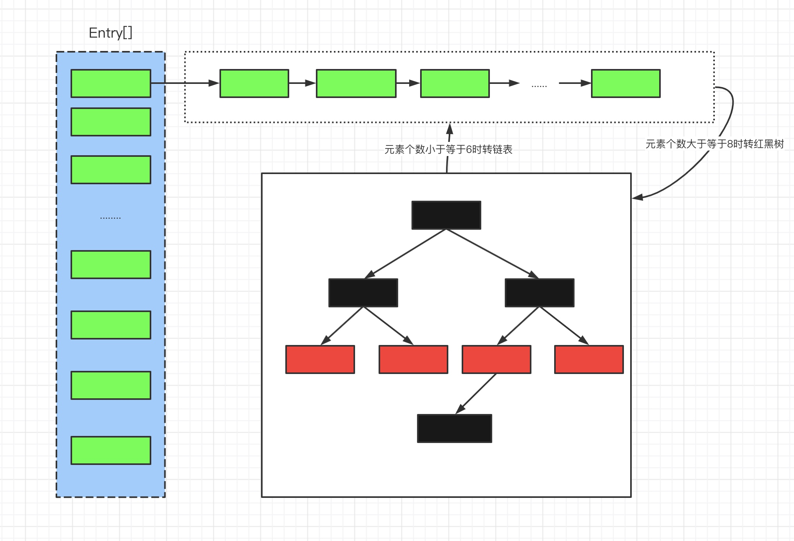
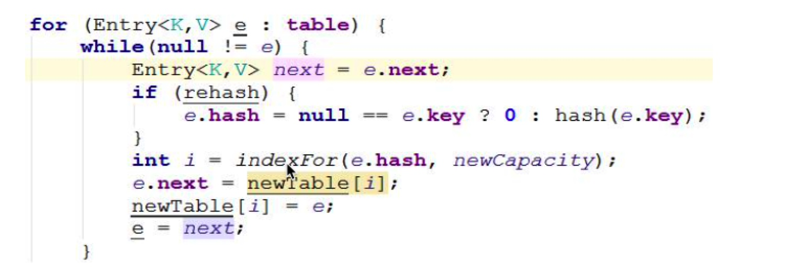

Map家族继承图
HashMap 概述
存储结构：
在Java中，HashMap的实现采用了（数组 + 链表 + 红黑树）的复杂结构，数组的一个元素又称作桶。
在添加元素时，会根据hash值算出元素在数组中的位置，如果该位置没有元素，则直接把元素放置在此处，如果该位置有元素了，则把元素以链表的形式放置在链表的尾部。
当一个链表的元素个数达到一定的数量（且数组的长度达到一定的长度）后，则把链表转化为红黑树，从而提高效率。
问题： 那为什么不将链表全部换成二叉树呢？这里主要有两个方面。
第一个是链表的结构比红黑树简单，构造红黑树要比构造链表复杂，所以在链表的节点不多的情况下，从整体的性能看来，数组+链表+红黑树的结构不一定比数组+链表的结构性能高。
第二个是HashMap频繁的resize（扩容），扩容的时候需要重新计算节点的索引位置，也就是会将红黑树进行拆分和重组，此波操作很复杂，这里涉及到红黑树的着色和旋转，有兴趣的可以看看红黑树
为了更清晰的查看HashMap的内部结构，执行下例：
执行如下代码：
Map<String, Integer> map = new HashMap<>(10);
map.put("战士", 1);
map.put("法师", 2);
map.put("盗贼", 3);
map.put("术士", 4);
map.put("牧师", 5);
map.put("猎人", 6);
map.put("圣骑士", 7);
map.put("萨满", 8);
map.put("死亡骑士", 9);
debug 模式查看 map的内部结构:
基于Map接口实现、允许null键/值、非同步、不保证有序(比如插入的顺序)、也不保证序不随时间变化。
HashMap
允许NULL值，NULL键
不要轻易改变负载因子，负载因子过高会导致链表过长，查找键值对时间复杂度就会增高，负载因子过低会导致hash桶的 数量过多，空间复杂度会增高
Hash表每次会扩容长度为以前的2倍
HashMap是多线程不安全的，在JDK1.7进行多线程put操作，之后遍历，直接死循环，CPU飙到100%，在JDK 1.8中进行多线程操作会出现节点和value值丢失
尽量设置HashMap的初始容量，尤其在数据量大的时候，防止多次resize
HashMap 工作原理
HashMap 底层是 Node（Entry的实现）数组 和 单向链表实现，数组中的每个元素都是链表，有Node内部类实现，HashMap通过 put 和 get 方法进行存取
源码解析
源码中采用了延迟初始化操作，也就是table只有在用到的时候才初始化，如果你不对他进行put等操作的话，table的长度永远为"零"。
HashMap 属性分析
/**
* 默认的初始容量为16
*/
static final int DEFAULT_INITIAL_CAPACITY = 1 << 4;
/**
* 最大的容量为2的30次方
*/
static final int MAXIMUM_CAPACITY = 1 << 30;
/**
* 默认的装载因子，
*/
static final float DEFAULT_LOAD_FACTOR = 0.75f;
/**
* 当一个桶中的元素个数大于等于7时进行树化
*/
static final int TREEIFY_THRESHOLD = 8;
/**
* 当一个桶中的元素个数小于等于6时把树转化为链表
*/
static final int UNTREEIFY_THRESHOLD = 6;
/**
* 当桶的个数达到64的时候才进行树化，否则进行扩容操作
*/
static final int MIN_TREEIFY_CAPACITY = 64;
/**
* 数组，又叫作桶（bucket），Node继承Map.Entry接口
*/
transient Node<K,V>[] table;
/**
* 作为entrySet()的缓存
*/
transient Set<Map.Entry<K,V>> entrySet;
/**
* 元素的数量
*/
transient int size;
/**
* 修改次数，用于在迭代的时候执行快速失败策略
*/
transient int modCount;
/**
* 当桶的使用数量达到多少时进行扩容，threshold = capacity * loadFactor
*/
int threshold;
/**
* 装载因子：用来计算容量达到多少时才进行扩容，默认装载因子为0.75。
*/
final float loadFactor;
装载因子
Node内部类
static class Node<K,V> implements Map.Entry<K,V> {
final int hash;
final K key;
V value;
Node<K,V> next;
}
TreeNode 内部类
TreeNode是一个典型的树型节点，继承自LinkedHashMap.Entry，其中，prev是链表中的节点，用于在删除元素的时候可以快速找到它的前置节点。
// 位于HashMap中
static final class TreeNode<K,V> extends LinkedHashMap.Entry<K,V> {
TreeNode<K,V> parent; // red-black tree links
TreeNode<K,V> left;
TreeNode<K,V> right;
TreeNode<K,V> prev; // needed to unlink next upon deletion
boolean red;
}
// 位于LinkedHashMap中，典型的双向链表节点
static class Entry<K,V> extends HashMap.Node<K,V> {
Entry<K,V> before, after;
Entry(int hash, K key, V value, Node<K,V> next) {
super(hash, key, value, next);
}
}
HashMap 构造函数
public HashMap(int initialCapacity, float loadFactor) {
// 检查传入的初始容量是否合法
if (initialCapacity < 0)
throw new IllegalArgumentException("Illegal initial capacity: " + initialCapacity);
if (initialCapacity > MAXIMUM_CAPACITY)
initialCapacity = MAXIMUM_CAPACITY;
// 检查装载因子是否合法
if (loadFactor <= 0 || Float.isNaN(loadFactor))
throw new IllegalArgumentException("Illegal load factor: " + loadFactor);
this.loadFactor = loadFactor;
// 计算扩容门槛
this.threshold = tableSizeFor(initialCapacity);
}
static final int tableSizeFor(int cap) {
// 扩容门槛为传入的初始容量往上取最近的2的n次方
int n = cap - 1;
n |= n >>> 1;
n |= n >>> 2;
n |= n >>> 4;
n |= n >>> 8;
n |= n >>> 16;
return (n < 0) ? 1 : (n >= MAXIMUM_CAPACITY) ? MAXIMUM_CAPACITY : n + 1;
}
put(K key, V value)方法
添加元素
public V put(K key, V value) {
// 调用hash(key)计算出key的hash值
return putVal(hash(key), key, value, false, true);
}
static final int hash(Object key) {
int h;
// 如果key为null，则hash值为0，否则调用key的hashCode()方法
// 并让高16位与整个hash 异或，这样做是为了使计算出的hash更分散
return (key == null) ? 0 : (h = key.hashCode()) ^ (h >>> 16);
}
final V putVal(int hash, K key, V value, boolean onlyIfAbsent,
boolean evict) {
Node<K, V>[] tab;
Node<K, V> p;
int n, i;
// 如果桶的数量为0，则初始化
if ((tab = table) == null || (n = tab.length) == 0)
// 调用resize()初始化
n = (tab = resize()).length;
// (n - 1) & hash 计算元素在哪个桶中
// 如果这个桶中还没有元素，则把这个元素放在桶中的第一个位置
if ((p = tab[i = (n - 1) & hash]) == null)
// 新建一个节点放在桶中
tab[i] = newNode(hash, key, value, null);
else {
// 如果桶中已经有元素存在了
Node<K, V> e;
K k;
// 如果桶中第一个元素的key与待插入元素的key相同，保存到e中用于后续修改value值
if (p.hash == hash &&
((k = p.key) == key || (key != null && key.equals(k))))
e = p;
else if (p instanceof TreeNode)
// 如果第一个元素是树节点，则调用树节点的putTreeVal插入元素
e = ((TreeNode<K, V>) p).putTreeVal(this, tab, hash, key, value);
else {
// 遍历这个桶对应的链表，binCount用于存储链表中元素的个数
for (int binCount = 0; ; ++binCount) {
// 如果链表遍历完了都没有找到相同key的元素，说明该key对应的元素不存在，则在链表最后插入一个新节点
if ((e = p.next) == null) {
p.next = newNode(hash, key, value, null);
// 如果插入新节点后链表长度大于等于7，则判断是否需要树化，因为第一个元素没有加到binCount中，所以这里-1
if (binCount >= TREEIFY_THRESHOLD - 1) // -1 for 1st
treeifyBin(tab, hash);
break;
}
// 如果待插入的key在链表中找到了，则退出循环
if (e.hash == hash &&
((k = e.key) == key || (key != null && key.equals(k))))
break;
p = e;
}
}
// 如果找到了对应key的元素
if (e != null) { // existing mapping for key
// 记录下旧值
V oldValue = e.value;
// 判断是否需要替换旧值
if (!onlyIfAbsent || oldValue == null)
// 替换旧值为新值
e.value = value;
// 在节点被访问后做点什么事，在LinkedHashMap中用到
afterNodeAccess(e);
// 返回旧值
return oldValue;
}
}
// 到这里了说明没有找到元素
// 修改次数加1
++modCount;
// 元素数量加1，判断是否需要扩容
if (++size > threshold)
// 扩容
resize();
// 在节点插入后做点什么事，在LinkedHashMap中用到
afterNodeInsertion(evict);
// 没找到元素返回null
return null;
}
计算key的hash值；
如果桶（数组）数量为0，则初始化桶；
如果key所在的桶没有元素，则直接插入；
如果key所在的桶中的第一个元素的key与待插入的key相同，说明找到了元素，转后续流程处理；
如果第一个元素是树节点，则调用树节点的putTreeVal()寻找元素或插入树节点；
如果不是以上三种情况，则遍历桶对应的链表查找key是否存在于链表中；
如果找到了对应key的元素，则转后续流程处理；
如果没找到对应key的元素，则在链表最后插入一个新节点并判断是否需要树化；
如果找到了对应key的元素，则判断是否需要替换旧值，并直接返回旧值；
如果插入了元素，则数量加1并判断是否需要扩容；
resize()
final Node<K, V>[] resize() {
// 旧数组
Node<K, V>[] oldTab = table;
// 旧容量
int oldCap = (oldTab == null) ? 0 : oldTab.length;
// 旧扩容门槛
int oldThr = threshold;
int newCap, newThr = 0;
if (oldCap > 0) {
if (oldCap >= MAXIMUM_CAPACITY) {
// 如果旧容量达到了最大容量，则不再进行扩容
threshold = Integer.MAX_VALUE;
return oldTab;
} else if ((newCap = oldCap << 1) < MAXIMUM_CAPACITY &&
oldCap >= DEFAULT_INITIAL_CAPACITY)
// 如果旧容量的两倍小于最大容量并且旧容量大于默认初始容量（16），则容量扩大为两部，扩容门槛也扩大为两倍
newThr = oldThr << 1; // double threshold
} else if (oldThr > 0) // initial capacity was placed in threshold
// 使用非默认构造方法创建的map，第一次插入元素会走到这里
// 如果旧容量为0且旧扩容门槛大于0，则把新容量赋值为旧门槛
newCap = oldThr;
else { // zero initial threshold signifies using defaults
// 调用默认构造方法创建的map，第一次插入元素会走到这里
// 如果旧容量旧扩容门槛都是0，说明还未初始化过，则初始化容量为默认容量，扩容门槛为默认容量*默认装载因子
newCap = DEFAULT_INITIAL_CAPACITY;
newThr = (int) (DEFAULT_LOAD_FACTOR * DEFAULT_INITIAL_CAPACITY);
}
if (newThr == 0) {
// 如果新扩容门槛为0，则计算为容量*装载因子，但不能超过最大容量
float ft = (float) newCap * loadFactor;
newThr = (newCap < MAXIMUM_CAPACITY && ft < (float) MAXIMUM_CAPACITY ?
(int) ft : Integer.MAX_VALUE);
}
// 赋值扩容门槛为新门槛
threshold = newThr;
// 新建一个新容量的数组
@SuppressWarnings({"rawtypes", "unchecked"})
Node<K, V>[] newTab = (Node<K, V>[]) new Node[newCap];
// 把桶赋值为新数组
table = newTab;
// 如果旧数组不为空，则搬移元素
if (oldTab != null) {
// 遍历旧数组
for (int j = 0; j < oldCap; ++j) {
Node<K, V> e;
// 如果桶中第一个元素不为空，赋值给e
if ((e = oldTab[j]) != null) {
// 清空旧桶，便于GC回收
oldTab[j] = null;
// 如果这个桶中只有一个元素，则计算它在新桶中的位置并把它搬移到新桶中
// 因为每次都扩容两倍，所以这里的第一个元素搬移到新桶的时候新桶肯定还没有元素
if (e.next == null)
newTab[e.hash & (newCap - 1)] = e;
else if (e instanceof TreeNode)
// 如果第一个元素是树节点，则把这颗树打散成两颗树插入到新桶中去
((TreeNode<K, V>) e).split(this, newTab, j, oldCap);
else { // preserve order
// 如果这个链表不止一个元素且不是一颗树
// 则分化成两个链表插入到新的桶中去
// 比如，假如原来容量为4，3、7、11、15这四个元素都在三号桶中
// 现在扩容到8，则3和11还是在三号桶，7和15要搬移到七号桶中去
// 也就是分化成了两个链表
Node<K, V> loHead = null, loTail = null;
Node<K, V> hiHead = null, hiTail = null;
Node<K, V> next;
do {
next = e.next;
// (e.hash & oldCap) == 0的元素放在低位链表中
// 比如，3 & 4 == 0
if ((e.hash & oldCap) == 0) {
if (loTail == null)
loHead = e;
else
loTail.next = e;
loTail = e;
} else {
// (e.hash & oldCap) != 0的元素放在高位链表中
// 比如，7 & 4 != 0
if (hiTail == null)
hiHead = e;
else
hiTail.next = e;
hiTail = e;
}
} while ((e = next) != null);
// 遍历完成分化成两个链表了
// 低位链表在新桶中的位置与旧桶一样（即3和11还在三号桶中）
if (loTail != null) {
loTail.next = null;
newTab[j] = loHead;
}
// 高位链表在新桶中的位置正好是原来的位置加上旧容量（即7和15搬移到七号桶了）
if (hiTail != null) {
hiTail.next = null;
newTab[j + oldCap] = hiHead;
}
}
}
}
}
return newTab;
}
如果使用是默认构造方法，则第一次插入元素时初始化为默认值，容量为16，扩容门槛为12；
如果使用的是非默认构造方法，则第一次插入元素时初始化容量等于扩容门槛，扩容门槛在构造方法里等于传入容量向上最近的2的n次方；
如果旧容量大于0，则新容量等于旧容量的2倍，但不超过最大容量2的30次方，新扩容门槛为旧扩容门槛的2倍；
创建一个新容量的桶；
搬移元素，原链表分化成两个链表，低位链表存储在原来桶的位置，高位链表搬移到原来桶的位置加旧容量的位置；
TreeNode.putTreeVal(...)
final TreeNode<K, V> putTreeVal(HashMap<K, V> map, Node<K, V>[] tab,
int h, K k, V v) {
Class<?> kc = null;
// 标记是否找到这个key的节点
boolean searched = false;
// 找到树的根节点
TreeNode<K, V> root = (parent != null) ? root() : this;
// 从树的根节点开始遍历
for (TreeNode<K, V> p = root; ; ) {
// dir=direction，标记是在左边还是右边
// ph=p.hash，当前节点的hash值
int dir, ph;
// pk=p.key，当前节点的key值
K pk;
if ((ph = p.hash) > h) {
// 当前hash比目标hash大，说明在左边
dir = -1;
}
else if (ph < h)
// 当前hash比目标hash小，说明在右边
dir = 1;
else if ((pk = p.key) == k || (k != null && k.equals(pk)))
// 两者hash相同且key相等，说明找到了节点，直接返回该节点
// 回到putVal()中判断是否需要修改其value值
return p;
else if ((kc == null &&
// 如果k是Comparable的子类则返回其真实的类，否则返回null
(kc = comparableClassFor(k)) == null) ||
// 如果k和pk不是同样的类型则返回0，否则返回两者比较的结果
(dir = compareComparables(kc, k, pk)) == 0) {
// 这个条件表示两者hash相同但是其中一个不是Comparable类型或者两者类型不同
// 比如key是Object类型，这时可以传String也可以传Integer，两者hash值可能相同
// 在红黑树中把同样hash值的元素存储在同一颗子树，这里相当于找到了这颗子树的顶点
// 从这个顶点分别遍历其左右子树去寻找有没有跟待插入的key相同的元素
if (!searched) {
TreeNode<K, V> q, ch;
searched = true;
// 遍历左右子树找到了直接返回
if (((ch = p.left) != null &&
(q = ch.find(h, k, kc)) != null) ||
((ch = p.right) != null &&
(q = ch.find(h, k, kc)) != null))
return q;
}
// 如果两者类型相同，再根据它们的内存地址计算hash值进行比较
dir = tieBreakOrder(k, pk);
}
TreeNode<K, V> xp = p;
if ((p = (dir <= 0) ? p.left : p.right) == null) {
// 如果最后确实没找到对应key的元素，则新建一个节点
Node<K, V> xpn = xp.next;
TreeNode<K, V> x = map.newTreeNode(h, k, v, xpn);
if (dir <= 0)
xp.left = x;
else
xp.right = x;
xp.next = x;
x.parent = x.prev = xp;
if (xpn != null)
((TreeNode<K, V>) xpn).prev = x;
// 插入树节点后平衡
// 把root节点移动到链表的第一个节点
moveRootToFront(tab, balanceInsertion(root, x));
return null;
}
}
}
寻找根节点；
从根节点开始查找；
比较hash值及key值，如果都相同，直接返回，在putVal()方法中决定是否要替换value值；
根据hash值及key值确定在树的左子树还是右子树查找，找到了直接返回；
如果最后没有找到则在树的相应位置插入元素，并做平衡；
treeifyBin()
如果插入元素后 链表的长度大于等于 8 ，则判断是否要树化
final void treeifyBin(Node<K, V>[] tab, int hash) {
int n, index;
Node<K, V> e;
if (tab == null || (n = tab.length) < MIN_TREEIFY_CAPACITY)
// 如果桶数量小于64，直接扩容而不用树化
// 因为扩容之后，链表会分化成两个链表，达到减少元素的作用
// 当然也不一定，比如容量为4，里面存的全是除以4余数等于3的元素
// 这样即使扩容也无法减少链表的长度
resize();
else if ((e = tab[index = (n - 1) & hash]) != null) {
TreeNode<K, V> hd = null, tl = null;
// 把所有节点换成树节点
do {
TreeNode<K, V> p = replacementTreeNode(e, null);
if (tl == null)
hd = p;
else {
p.prev = tl;
tl.next = p;
}
tl = p;
} while ((e = e.next) != null);
// 如果进入过上面的循环，则从头节点开始树化
if ((tab[index] = hd) != null)
hd.treeify(tab);
}
}
TreeNode.treeify()
真正树化的方法
final void treeify(Node<K, V>[] tab) {
TreeNode<K, V> root = null;
for (TreeNode<K, V> x = this, next; x != null; x = next) {
next = (TreeNode<K, V>) x.next;
x.left = x.right = null;
// 第一个元素作为根节点且为黑节点，其它元素依次插入到树中再做平衡
if (root == null) {
x.parent = null;
x.red = false;
root = x;
} else {
K k = x.key;
int h = x.hash;
Class<?> kc = null;
// 从根节点查找元素插入的位置
for (TreeNode<K, V> p = root; ; ) {
int dir, ph;
K pk = p.key;
if ((ph = p.hash) > h)
dir = -1;
else if (ph < h)
dir = 1;
else if ((kc == null &&
(kc = comparableClassFor(k)) == null) ||
(dir = compareComparables(kc, k, pk)) == 0)
dir = tieBreakOrder(k, pk);
// 如果最后没找到元素，则插入
TreeNode<K, V> xp = p;
if ((p = (dir <= 0) ? p.left : p.right) == null) {
x.parent = xp;
if (dir <= 0)
xp.left = x;
else
xp.right = x;
// 插入后平衡，默认插入的是红节点，在balanceInsertion()方法里
root = balanceInsertion(root, x);
break;
}
}
}
}
// 把根节点移动到链表的头节点，因为经过平衡之后原来的第一个元素不一定是根节点了
moveRootToFront(tab, root);
}
从链表的第一个元素开始遍历；
将第一个元素作为根节点；
其它元素依次插入到红黑树中，再做平衡;
将根节点移到链表第一元素的位置（因为平衡的时候根节点会改变）；
get(Object key)
public V get(Object key) {
Node<K, V> e;
return (e = getNode(hash(key), key)) == null ? null : e.value;
}
final Node<K, V> getNode(int hash, Object key) {
Node<K, V>[] tab;
Node<K, V> first, e;
int n;
K k;
// 如果桶的数量大于0并且待查找的key所在的桶的第一个元素不为空
if ((tab = table) != null && (n = tab.length) > 0 &&
(first = tab[(n - 1) & hash]) != null) {
// 检查第一个元素是不是要查的元素，如果是直接返回
if (first.hash == hash && // always check first node
((k = first.key) == key || (key != null && key.equals(k))))
return first;
if ((e = first.next) != null) {
// 如果第一个元素是树节点，则按树的方式查找
if (first instanceof TreeNode)
return ((TreeNode<K, V>) first).getTreeNode(hash, key);
// 否则就遍历整个链表查找该元素
do {
if (e.hash == hash &&
((k = e.key) == key || (key != null && key.equals(k))))
return e;
} while ((e = e.next) != null);
}
}
return null;
}
计算key的hash值；
找到key所在的桶及其第一个元素；
如果第一个元素的key等于待查找的key，直接返回；
如果第一个元素是树节点就按树的方式来查找，否则按链表方式查找；
TreeNode.getTreeNode(int h, Object k) 方法
final TreeNode<K, V> getTreeNode(int h, Object k) {
// 从树的根节点开始查找
return ((parent != null) ? root() : this).find(h, k, null);
}
final TreeNode<K, V> find(int h, Object k, Class<?> kc) {
TreeNode<K, V> p = this;
do {
int ph, dir;
K pk;
TreeNode<K, V> pl = p.left, pr = p.right, q;
if ((ph = p.hash) > h)
// 左子树
p = pl;
else if (ph < h)
// 右子树
p = pr;
else if ((pk = p.key) == k || (k != null && k.equals(pk)))
// 找到了直接返回
return p;
else if (pl == null)
// hash相同但key不同，左子树为空查右子树
p = pr;
else if (pr == null)
// 右子树为空查左子树
p = pl;
else if ((kc != null ||
(kc = comparableClassFor(k)) != null) &&
(dir = compareComparables(kc, k, pk)) != 0)
// 通过compare方法比较key值的大小决定使用左子树还是右子树
p = (dir < 0) ? pl : pr;
else if ((q = pr.find(h, k, kc)) != null)
// 如果以上条件都不通过，则尝试在右子树查找
return q;
else
// 都没找到就在左子树查找
p = pl;
} while (p != null);
return null;
}
经典二叉查找树的查找过程，先根据hash值比较，再根据key值比较决定是查左子树还是右子树。
remove(Object key)
public V remove(Object key) {
Node<K, V> e;
return (e = removeNode(hash(key), key, null, false, true)) == null ?
null : e.value;
}
final Node<K, V> removeNode(int hash, Object key, Object value,
boolean matchValue, boolean movable) {
Node<K, V>[] tab;
Node<K, V> p;
int n, index;
// 如果桶的数量大于0且待删除的元素所在的桶的第一个元素不为空
if ((tab = table) != null && (n = tab.length) > 0 &&
(p = tab[index = (n - 1) & hash]) != null) {
Node<K, V> node = null, e;
K k;
V v;
if (p.hash == hash &&
((k = p.key) == key || (key != null && key.equals(k))))
// 如果第一个元素正好就是要找的元素，赋值给node变量后续删除使用
node = p;
else if ((e = p.next) != null) {
if (p instanceof TreeNode)
// 如果第一个元素是树节点，则以树的方式查找节点
node = ((TreeNode<K, V>) p).getTreeNode(hash, key);
else {
// 否则遍历整个链表查找元素
do {
if (e.hash == hash &&
((k = e.key) == key ||
(key != null && key.equals(k)))) {
node = e;
break;
}
p = e;
} while ((e = e.next) != null);
}
}
// 如果找到了元素，则看参数是否需要匹配value值，如果不需要匹配直接删除，如果需要匹配则看value值是否与传入的value相等
if (node != null && (!matchValue || (v = node.value) == value ||
(value != null && value.equals(v)))) {
if (node instanceof TreeNode)
// 如果是树节点，调用树的删除方法（以node调用的，是删除自己）
((TreeNode<K, V>) node).removeTreeNode(this, tab, movable);
else if (node == p)
// 如果待删除的元素是第一个元素，则把第二个元素移到第一的位置
tab[index] = node.next;
else
// 否则删除node节点
p.next = node.next;
++modCount;
--size;
// 删除节点后置处理
afterNodeRemoval(node);
return node;
}
}
return null;
}
先查找元素所在的节点；
如果找到的节点是树节点，则按树的移除节点处理；
如果找到的节点是桶中的第一个节点，则把第二个节点移到第一的位置；
否则按链表删除节点处理；
修改size，调用移除节点后置处理等；
TreeNode.removeTreeNode(...)方法
final void removeTreeNode(HashMap<K, V> map, Node<K, V>[] tab,
boolean movable) {
int n;
// 如果桶的数量为0直接返回
if (tab == null || (n = tab.length) == 0)
return;
// 节点在桶中的索引
int index = (n - 1) & hash;
// 第一个节点，根节点，根左子节点
TreeNode<K, V> first = (TreeNode<K, V>) tab[index], root = first, rl;
// 后继节点，前置节点
TreeNode<K, V> succ = (TreeNode<K, V>) next, pred = prev;
if (pred == null)
// 如果前置节点为空，说明当前节点是根节点，则把后继节点赋值到第一个节点的位置，相当于删除了当前节点
tab[index] = first = succ;
else
// 否则把前置节点的下个节点设置为当前节点的后继节点，相当于删除了当前节点
pred.next = succ;
// 如果后继节点不为空，则让后继节点的前置节点指向当前节点的前置节点，相当于删除了当前节点
if (succ != null)
succ.prev = pred;
// 如果第一个节点为空，说明没有后继节点了，直接返回
if (first == null)
return;
// 如果根节点的父节点不为空，则重新查找父节点
if (root.parent != null)
root = root.root();
// 如果根节点为空，则需要反树化（将树转化为链表）
// 如果需要移动节点且树的高度比较小，则需要反树化
if (root == null
|| (movable
&& (root.right == null
|| (rl = root.left) == null
|| rl.left == null))) {
tab[index] = first.untreeify(map); // too small
return;
}
// 分割线，以上都是删除链表中的节点，下面才是直接删除红黑树的节点（因为TreeNode本身即是链表节点又是树节点）
// 删除红黑树节点的大致过程是寻找右子树中最小的节点放到删除节点的位置，然后做平衡，此处不过多注释
TreeNode<K, V> p = this, pl = left, pr = right, replacement;
if (pl != null && pr != null) {
TreeNode<K, V> s = pr, sl;
while ((sl = s.left) != null) // find successor
s = sl;
boolean c = s.red;
s.red = p.red;
p.red = c; // swap colors
TreeNode<K, V> sr = s.right;
TreeNode<K, V> pp = p.parent;
if (s == pr) { // p was s's direct parent
p.parent = s;
s.right = p;
} else {
TreeNode<K, V> sp = s.parent;
if ((p.parent = sp) != null) {
if (s == sp.left)
sp.left = p;
else
sp.right = p;
}
if ((s.right = pr) != null)
pr.parent = s;
}
p.left = null;
if ((p.right = sr) != null)
sr.parent = p;
if ((s.left = pl) != null)
pl.parent = s;
if ((s.parent = pp) == null)
root = s;
else if (p == pp.left)
pp.left = s;
else
pp.right = s;
if (sr != null)
replacement = sr;
else
replacement = p;
} else if (pl != null)
replacement = pl;
else if (pr != null)
replacement = pr;
else
replacement = p;
if (replacement != p) {
TreeNode<K, V> pp = replacement.parent = p.parent;
if (pp == null)
root = replacement;
else if (p == pp.left)
pp.left = replacement;
else
pp.right = replacement;
p.left = p.right = p.parent = null;
}
TreeNode<K, V> r = p.red ? root : balanceDeletion(root, replacement);
if (replacement == p) { // detach
TreeNode<K, V> pp = p.parent;
p.parent = null;
if (pp != null) {
if (p == pp.left)
pp.left = null;
else if (p == pp.right)
pp.right = null;
}
}
if (movable)
moveRootToFront(tab, r);
}
TreeNode本身既是链表节点也是红黑树节点；
先删除链表节点
再删除红黑树节点并做平衡
源码部分总结
（1）HashMap是一种散列表，采用（数组 + 链表 + 红黑树）的存储结构；
jdk8 与 jdk7 中的HashMap有什么区别
jdk8 中 HashMap 加入了 红黑树结构，当链表长度超过 8 的时候，会判断时候要将链表转化为红黑树（同的数量必须大于 64，否则只会进行扩容操作）
发生hash冲突的时候 jdk7 HashMap 采用头插法插入链表，jdk8 采用尾插法插入链表
jdk8 中 table[]数组由 jdk7中的 Entry 替换为了 Node结构，不过功能上都是一样的，换了一个马甲
